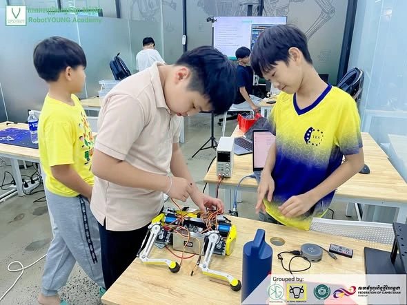
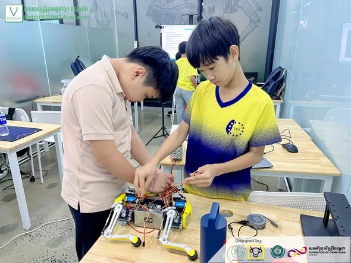
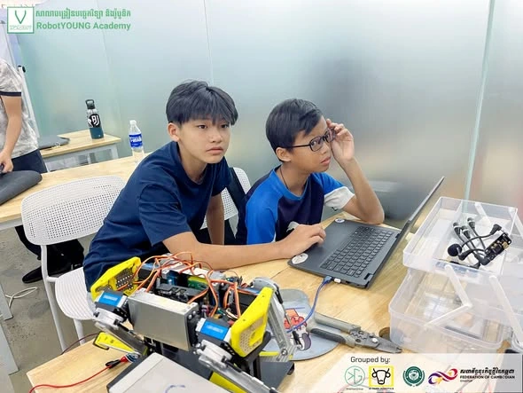
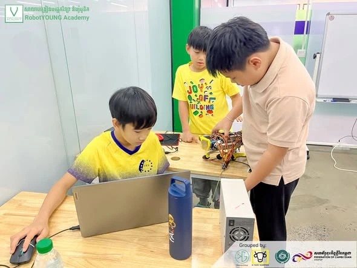

🤖 នៅពេលកូដ និងអេឡិចត្រូនិករួមគ្នា "Robot Dog" ក៏ចាប់ផ្តើមដើរ - When coding meets engineering, a Robot Dog comes to life!
នៅក្នុងថ្នាក់ STEM Robotics Engineering Program សិស្សានុសិស្សរបស់យើងកំពុងសាងសង់ និងសាកល្បង Quadruped Robot (Robot Dog) ដោយផ្ទាល់។ តាមរយៈការភ្ជាប់អេឡិចត្រូនិក ការគ្រប់គ្រង Servo Motors និងការសរសេរកូដ សិស្សបានអនុវត្តចំណេះដឹងទៅលើគម្រោងពិត និងរៀនដោះស្រាយបញ្ហាបច្ចេកទេសជាក្រុម។
ការរៀនបែប Hands-on Learning នេះជួយអភិវឌ្ឍជំនាញ Robotics, Coding, Problem-Solving និង Teamwork ដែលជាមូលដ្ឋានសម្រាប់វិស្វករ និងអ្នកបង្កើតបច្ចេកវិទ្យានាពេលអនាគត។
EN: In our STEM Robotics Engineering Program, students are building and testing a Quadruped Robot (Robot Dog) through hands-on learning. By integrating electronics, servo motor control, and coding, they gain practical engineering experience while developing skills in robotics, problem-solving, and teamwork.
#RobotYOUNGAcademy#STEMEducation#RoboticsEngineering#QuadrupedRobot#FutureEngineers#HandsOnLearning#CodingForKids



